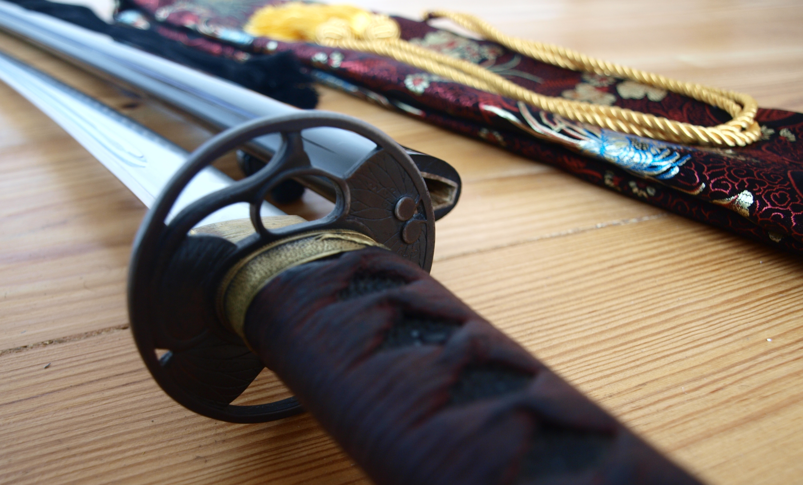
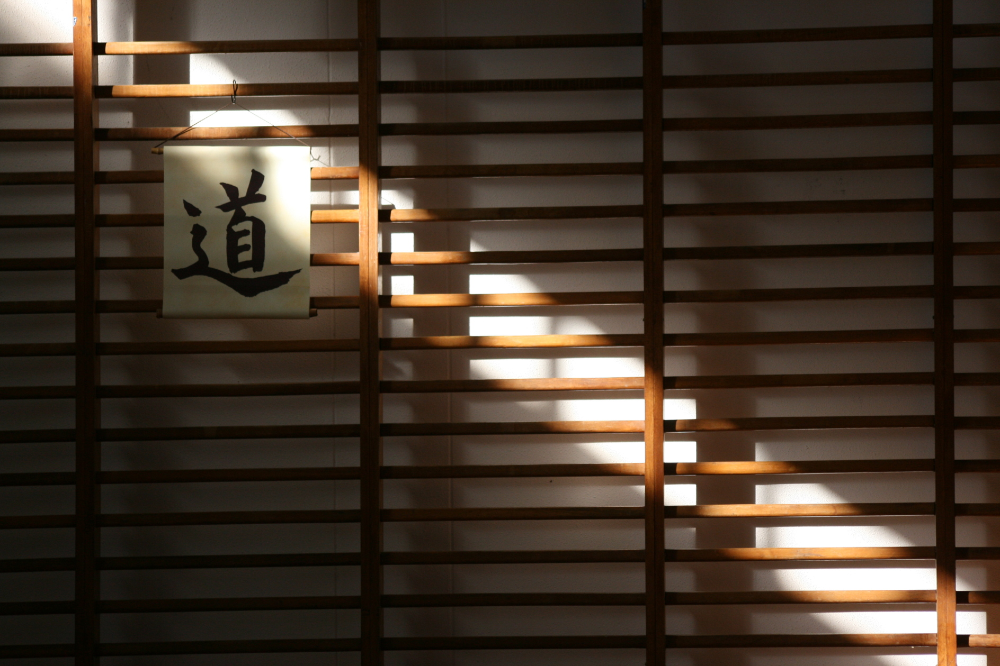
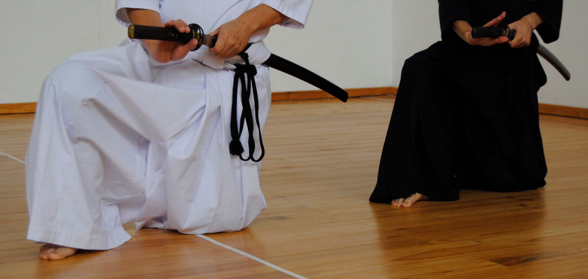
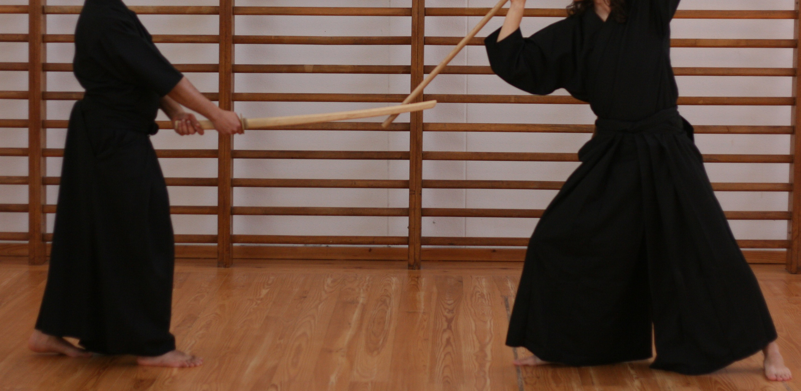
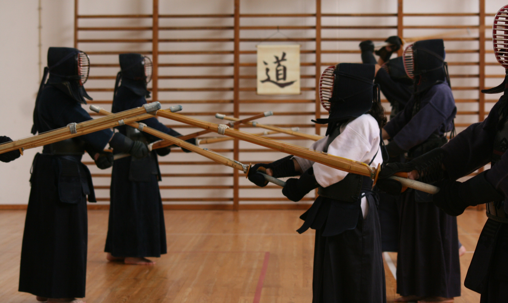
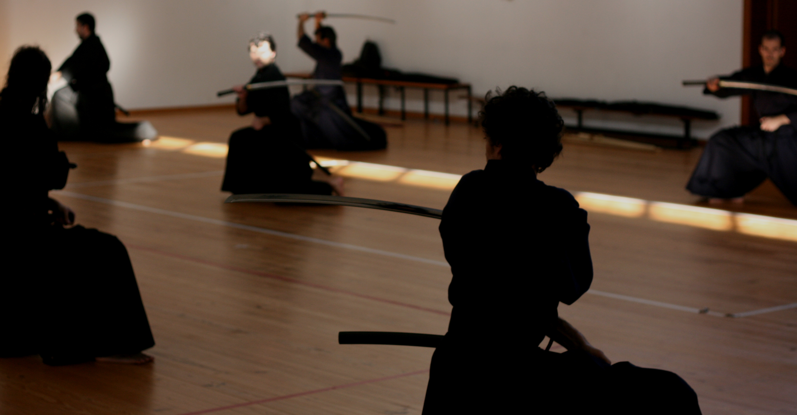

Asakazekan 朝風館
JODO – IAIDO – KENDO
- 
- 
- 
- 
- 
(Zen Nihon Kendo Renmei ou ZNKR) Iaido
Iaido é a arte que une numa ação integrada, fluida e eficiente, o desembainhar e o cortar com o sabre japonês (Nihonto ou Katana).

Junto com o Kenjutsu, esta disciplina constituía o cerne do leque tradicional das artes marciais cultivadas pelos samurais, a classe nobre guerreira japonesa que dominou esse país durante mais de oito séculos.
O estudo e a prática do Iaido é pois centenária, e consiste em ações de desembainhar, efetuar um ou vários cortes, sacudir o sangre da lâmina e voltar a embainhar o sabre.
As técnicas mais divulgadas de Iai são as adotadas pela Zen Nihon Kendo Renmei ou ZNKR (Federação Japonesa de Kendo) com base num currículo de doze formas ou Katas, que foi desenvolvido na segunda metade do Século XX a partir das formas originais de diversas escolas tradicionais (Koryu).

Este conjunto específico de doze formas constitui assim a base essencial para a introdução ao estudo do sabre japonês, e serve de base para as competições desportivas e as graduações oficiais reconhecidas pelo ZNKR e EKF.
A ação decorre a partir de situações predefinidas contra um ou vários adversários imaginários, podendo estes assumirem diversas posições, distâncias ou graus de ameaça.
O Iaidoka, i.e. o praticante de Iai, aprende assim a apurar a sua concentração com base numa mente calma e lúcida, em busca de grande eficiência técnica, capacidade de decisão, correta noção de tempo e espaço, bem como um sentido de rigor, dignidade e solenidade em todos os seus gestos e atos.
Contudo, mais do que meras técnicas de combate, através de Iai, o Iaidoka desenvolve a capacidade de ajuizar e enfrentar adversidades de vária ordem com auto-controlo, tranquilidade e lucidez.
Com efeito, o estudo de Iaido incide principalmente sobre os fenómenos da própria mente, visando em última instância, harmonizá-lo consigo mesmo, bem como as situações e os desafios associados aos cenários situacionais estudados.
A prática de Iaido é individual, estilizada e segura, e é aberta a todas as idades (a partir dos 18 anos) e condições físicas.
No Asakazekan, o estudo e a prática de ZNKR Iaido é complementar e paralelo ao currículo tradicional de Sui Ô Ryu Iai Kenpo.